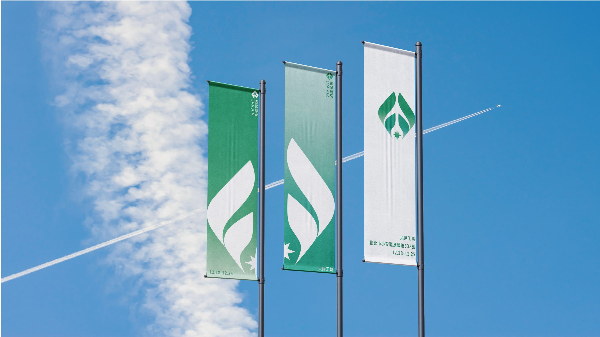
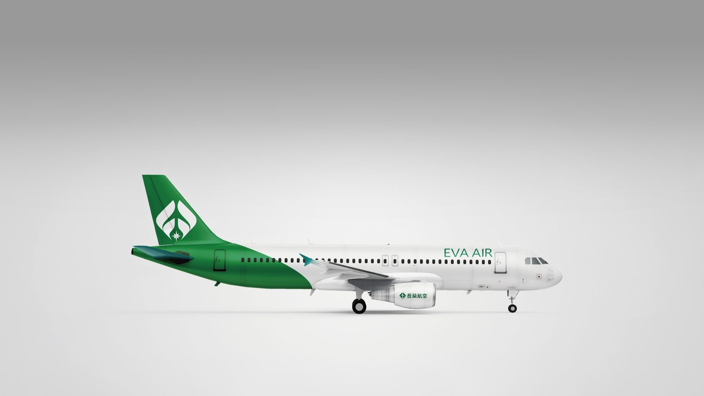
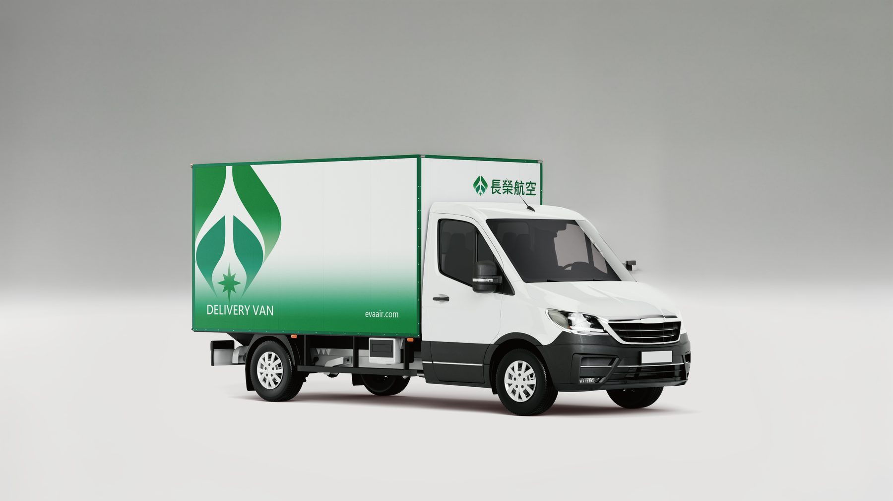
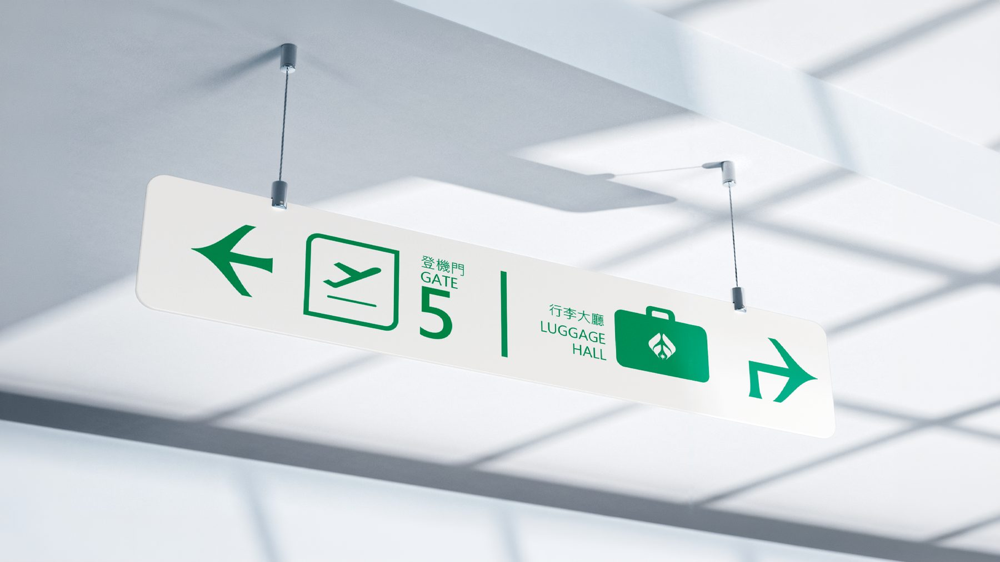

長榮航空 品牌升級 2024

這是一次針對長榮航空的品牌識別升級專案,將主視覺延伸至機場環境旗幟、 機身塗裝、地勤車輛與航廈指標系統,建立跨場域一致的品牌辨識度。
設計過程中著重識別標誌在不同尺寸與材質上的呈現方式,確保從空側到陸側、 從大型塗裝到小型指標,都能維持一致的品牌語彙與辨識度。




這是一次針對長榮航空的品牌識別升級專案,將主視覺延伸至機場環境旗幟、 機身塗裝、地勤車輛與航廈指標系統,建立跨場域一致的品牌辨識度。
設計過程中著重識別標誌在不同尺寸與材質上的呈現方式,確保從空側到陸側、 從大型塗裝到小型指標,都能維持一致的品牌語彙與辨識度。


